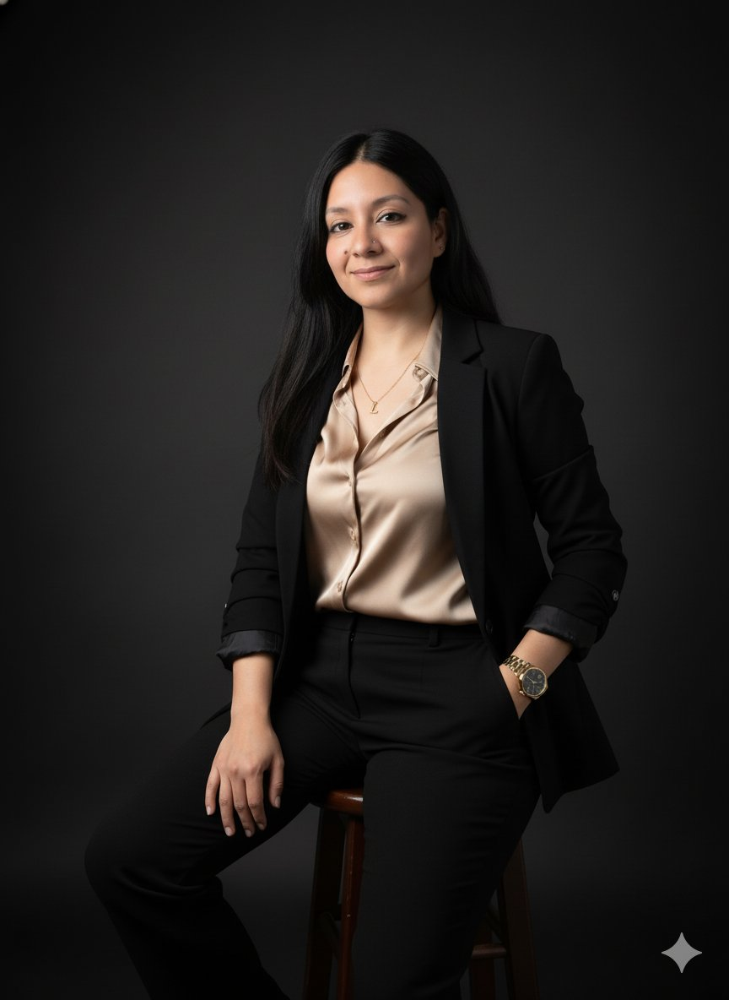

Bienvenidos a esta experiencia curricular donde desarrollarán competencias investigativas para elaborar y sustentar su proyecto de investigación.

Ing. de Sistemas y Magíster en Gestión de la Información (UPV, España – Becaria PRONABEC). Más de 14 años de experiencia en gestión documental, sistemas de información e investigación aplicada en bioinformática, tecnología educativa, e-health y datos abiertos. Certificada Scrum Master y diplomada en Gestión de Proyectos PMP.
Generar y potenciar competencias investigativas, elaborando un proyecto de investigación con metodología científica.
Semipresencial • 16 sesiones • 112 horas lectivas (80 Teoría + 32 Práctica) • 6 créditos.
Introducción, Marco Metodológico, Aspectos Administrativos, Revisión y Sustentación del proyecto.
Turnitin < 20% de similitud. Prohibido incorporar textos generados con IA. Código de Ética UCV vigente.
Los proyectos deben alinearse a los Objetivos de Desarrollo Sostenible de las Naciones Unidas.
Todo proyecto se somete al Comité de Ética en Investigación de la UCV para aprobación antes de sustentación.
16 sesiones • Del 6 de abril al 19 de julio 2026
Plataforma principal del curso: materiales, foros, evaluaciones y entregas.
Plataforma complementaria de la UCV para recursos y actividades interactivas.
Software antiplagio. Tu proyecto debe tener <20% de similitud. Sin textos IA.
Bases de datos académicas para fuentes confiables de tu investigación.
Registro del proyecto, metadatos y productos de investigación.
Reglamento y Guía de trabajos conducentes a grados y títulos de la UCV.
Espero que en este ciclo se concreten todas las metas propuestas. Les deseo muchos éxitos en esta nueva experiencia que están iniciando. ¡Bienvenidos!